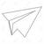 |
June 2025: Congratulations Dr. Ali Saeibehrouzi and Dr. Callum Samuels for defending your PhD!! |
| June 2024: Qihang Li finished his successful research stay, where we studied experimentally microplastics transport in soils [Li et al., IScience 2025; Li et al., Earth-Science Reviews 2025] | 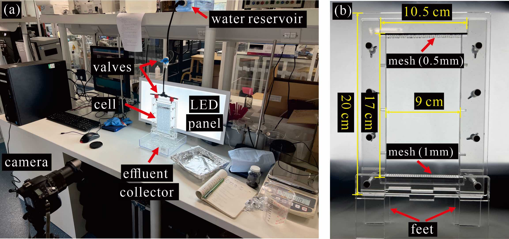 |
| June 2023: Congratulations Dr. Emmanuel Luther for defending your PhD!! |
| July 2023: InterPore Journal: New open-access journal by the InterPore society, now accepting papers! |
|
March 2022: Special collection on Nonequilibrium Multiphase and Reactive Flows in Porous and Granular Materials, published jointly by Frontiers in Water and Frontiers in Physics .
Details and submission here. |
| December 2021: Emmanuel Luther's PhD work on density driven instabilities in the context of CCS was published in International Journal of Greenhouse Gas Control and Physics of Fluids. It demonstrates that the onset of convective instabilities is controlled by spatial heterogeneity in permeability, as well as the interplay between diffusion and convection, quantified through the Rayleigh number (Ra). For an inclined layer, we find that the onset time increases with the inclination angle, up to a cut-off angle beyond which the system remains stable, which in turn depends on Ra. | 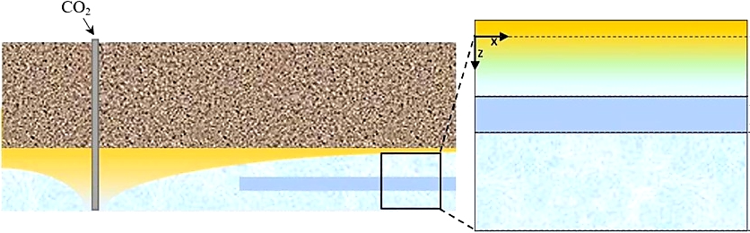 |
| May 2021: Roi Roded's paper on wormholing in anisotropic media has been published in Geophysical Research Letters. Pore network modellinng shows that anisotropy affects permeability evolution and the optimum injection rate. We characterize its effect on wormholing dynamics--their competition, characteristic separation distance, shapes and tendency to develop side-branches, and analyse similarities and differences to viscous fingering and other unstable growth processes. | 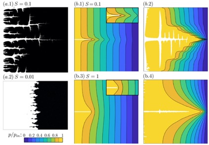 |
| December 2020: Our paper on hysteresis and memory of two-phase flow in disordered media was published in Nature Communications Physics. Our model provides the quantitative link between the microscopic capillary physics, spatially-extended collective events (Haines jumps) and large-scale hysteresis, based solely on measurable medium and fluid characteristics--a long-standing problem with significant science and engineering implications. | 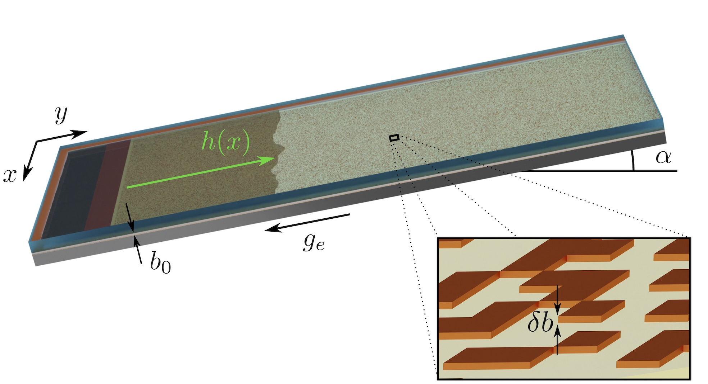 |
| October 2020: Roi Roded's paper in Water Resour. Res. uses a pore network model to provide fundamental insights into reactive transport processes in fractured and porous media, and evolution of permeability, tortuosity, anisotropy, and bulk reaction rates in geological systems. | 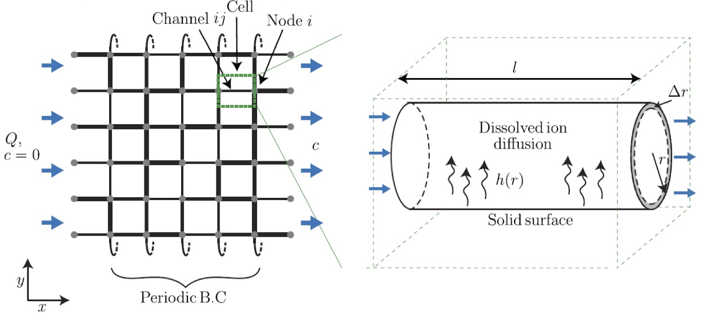 |
| March 2020: Oshri Borgman's paper on drying of granular materials was published in Int. J. Heat Mass Tran.. We show that lowering heterogeneity and confining stress induces matrix deformation, which, in turn, promotes preferential drying patterns and maintains higher drying rates for longer duration. | 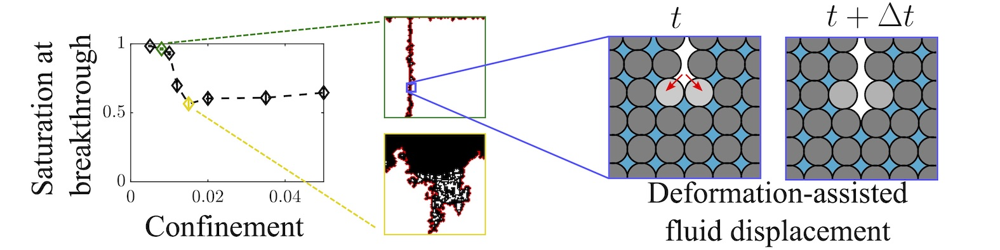 |
|
October 2019: New Special Interest Group (SIG) within EPSRC-funded UK Fluids Network, entitled "Flow, deformation, and reaction patterns in porous media", led by Ran Holtzman.
The SIG seeks to understand, predict and eventually control the patterns that emerge in porous and granular materials by fluid flow. Examples include: (i) preferential flow pathways induced by mechanical and/or chemical matrix deformations, e.g. fracturing and dissolution; (ii) fluid fingers associated with microstructural heterogeneity and hydrodynamic instabilities; (iii) Thermo/turbophoresis, precipitation, and deposition of solutes and particles.
|
 |
| June 2019: A comprehensive comparison of pore-scale models for multiphase flow in porous media, led by Ruben Juanes, was published in PNAS. Our own model was able to reproduce the complex patterns across the wide range of flow speeds (Ca values) and wettability conditions, besides at strong imbibition where film and corner flow dominates. | 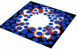 |
| June 2019: Oshri Borgman's paper showing how increasing spatial correlation in pore sizes leads to more preferential displacement, using numerical simulations together with microfluidic experiments (performed in the laboratory of Lucas Goehring in NTU) was published in Adv. Water Resour. | 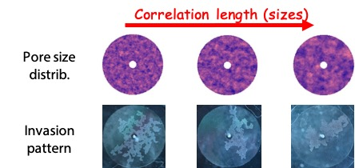 |
| December 2018: Yonatan Ganot's study on modeling the spreading of reverse-osmosis desalinated seawater in an aquifer using stable water isotopes, was published in Hydrol. Earth Syst. Sci.. The study, led by Dani Kurtzman from the Agricultural Research Center (ARO) in Israel, offers a useful methodology for predicting the distribution of reverse-osmosis desalinated seawater in various downstream groundwater systems. | 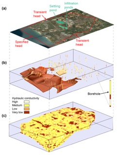 |
| December 2018: Soumyajyoti Biswas paper on how the dynamics of a drying front propagating through a porous medium are affected by small-scale correlations in material properties, was published in Phys. Rev. Fluids. The study combined drying experiments in microfluidic cells (led by Lucas Goehring), numerical simulations (led by Ran Holtzman) and a model of invasion percolation with trapping (by Soumyajyoti Biswas). | 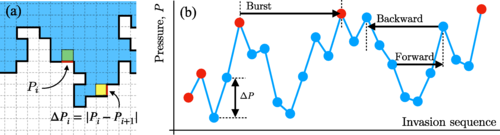 |
| July 2018: Roi Roded's paper in Earth Planet. Sci. Lett. presents a novel pore-scale model that captures coupling of dissolution and weakening-induced compaction. We show that the application of stress suppresses permeability enhancement, by reducing transport heterogeneity, promoting wormhole competition at high Da. Our model demonstrates that the underlying mechanism is a bottleneck effect caused by stress concentration at the undissolved stiffer downstream. | 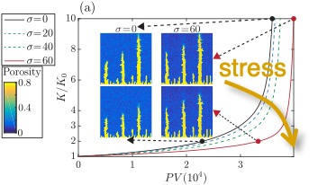 |